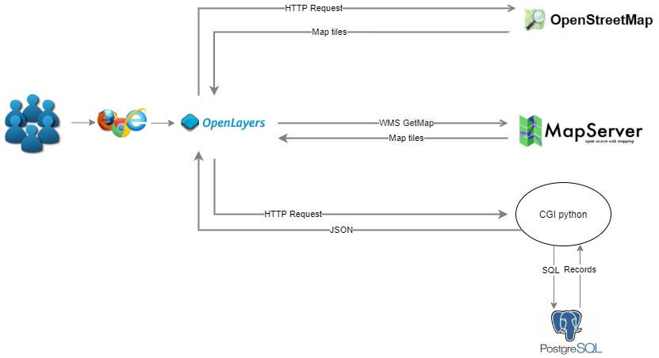

Introduction
This website contains two classification Images and a Digital Terrain Model (DTM) as the main photogrammetric products. The classified images follow the "Maximum Likelihood Classification" and "Support Vector Machine Classification" algorithm. The DTM is generated for a region in Germany and visualised by overlaying it upon the Open Street Map data.
The workflow of each of the products is breifly described and its quality aspects are discussed. Further, a comparative analysis is drawn to understand the quality of the generated product with the existing ones.
Web Architecture

The website architecture contains two parts: web client and web server.
The client side use OpenLayer to display map tiles and vector data. Server side contains three different servers.
OpenStreetMap is a map server provide a worldwide map which is used as the base map.
CGI python provide the vector data of the provinces of the Netherlands in JSON format.These data are fetched from the database using queries via CGI python.
MapServer provide the WMS service which contains DTM and Classification Images we produced.
Web Map Service Interface Standard (WMS) is a standard protocol developed by the Open Geospatial Consortium. It provides a simple HTTP interface for requesting geo-registered map images from one or more distributed geospatial databases. A WMS request defines the geographic layer(s) and area of interest to be processed. The response to the request is one or more geo-registered map images.
MapServer implements WMS features, it supports the different WMS versions. MapServer has a setting up .map file.This website publishes the photogrammetric products by changing configuration of .map file.Then map server could provide WMS service containing map tiles of our products.
Products
Two classification images of Enschede. using the "Maximum Likelihood Classification" and "Support Vector Machine " algorithm.

A digital elevation model using photogrammetric techniques, featuring a region of Germany.